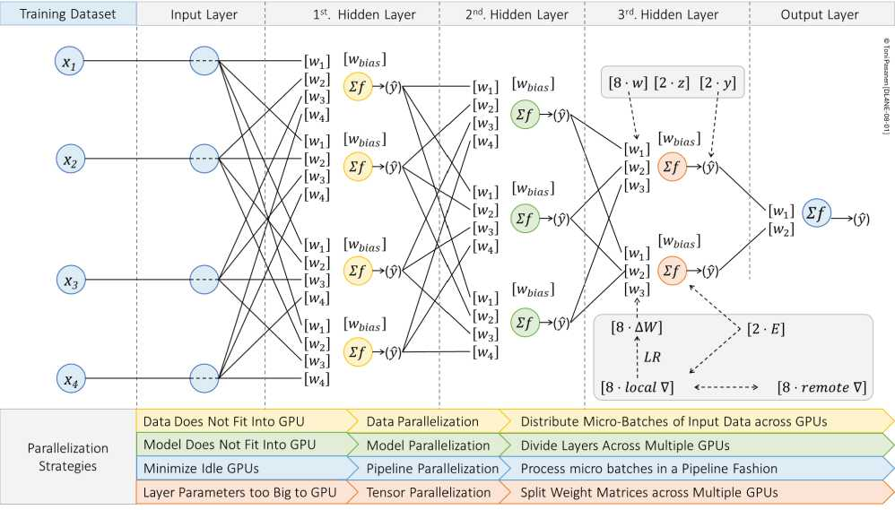
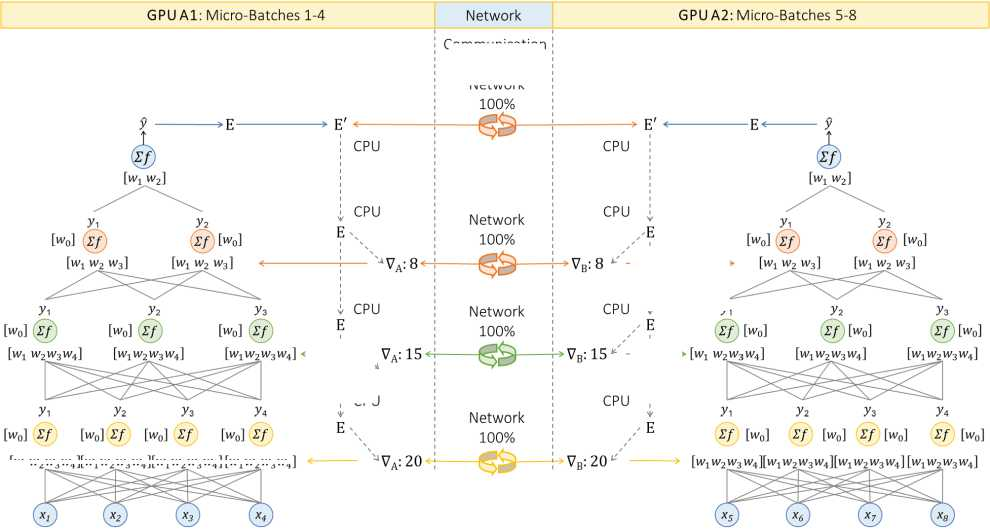

书 p176 图 8-1 列出：权重矩阵、z、激活 y、误差 E、本地/远端梯度、学习率、Δw，再加数据集与代码。LLM 百亿参数 FP16 就 20GB+，加上优化器状态×2-3倍，单卡 80GB 也紧张，必须并行。
数据切 micro-batch，每 GPU 一份完整模型各自算梯度，再 AllReduce 平均同步后各自更新。优点简单、扩展好；缺点每卡仍要全模型 + 每次迭代都同步（流量大）。同步慢的一卡拖慢全体（straggler）。
模型按层切给不同 GPU，前卡算完把激活传后卡（点到点）。朴素切分有气泡（后卡等前卡），流水线把 batch 再切 micro-batch 填气泡，但仍有 25%-100% 利用率波动（书 p181-191 十步演示）。


用一句话区分数据并行（切数据）与模型并行（切模型）。